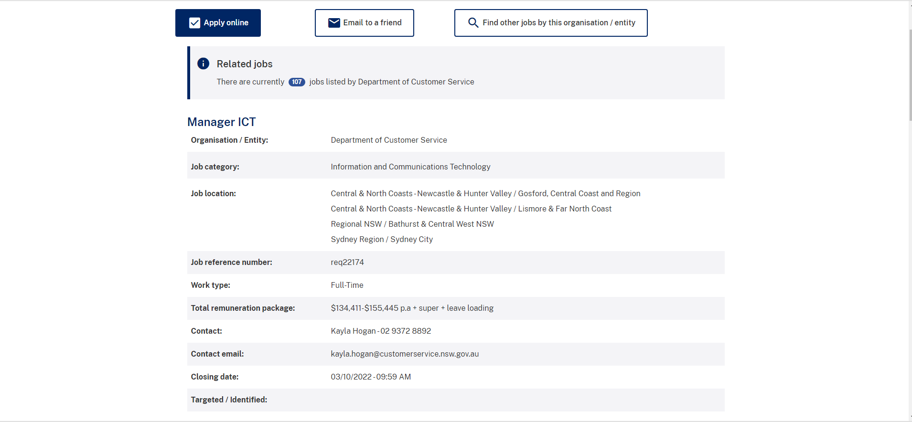

Ideal Job
Job information
ICT Support Officer
Link to the original joblisting

Position Description
A Manager of ICT position advertised within NSW Telco Authority, under Digital.NSW which is part of the Department of Customer Service. What’s most appealing about this role is that it provides flexibility in location and working arrangements, along with a generous salary and other benefits.
Skills, qualifications and experience required
- Management skills and experience – Leadership skills, teambuilding skills, knowledge of how to best utilize team member skillsets
- ICT product base knowledge – Particularly in relation to business focused products and features
- Superb level of interpersonal communication skills to assist in liasing with key stakeholders
- Knowledge of government systems and intricacies
Skills, qualifications and experience I have
- Some leadership and teambuilding skills – Via my time in the NSW SES
- Limited IT knowledge and experience
- Decent interpersonal communication skills
- Some loose knowledge of some government systems
- No experience in service desk positions or with industry relevent service desk systems.
What's my plan?
- Complete course - Batchelors in IT
- Continue current career path into NSW SES – Communications officer – build communication, time management and team skills
- Work on personal time management